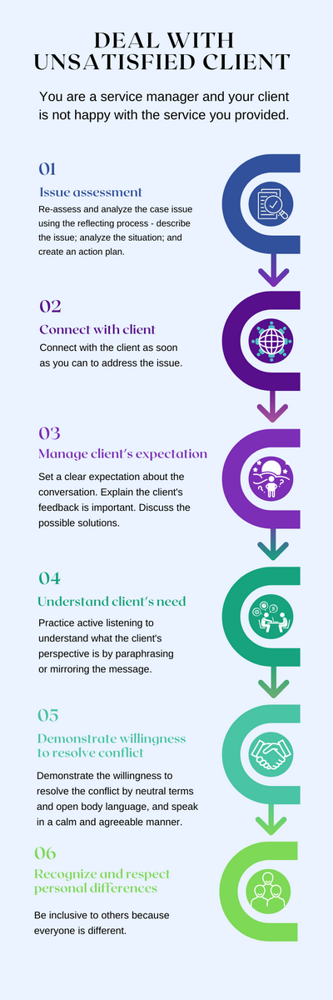

Reflecting and Repairing
Reflecting
Reflective practice involves actively analyzing your experiences and actions, in order to help yourself improve and develop (Effectiviology, n.d). There are many benefits to practicing reflecting, including a better understanding of the rationale behind your actions, increased feelings of control, and improved performance. These benefits can extend to additional areas beyond the one in which you initially engaged in reflective practice.
Repairing
Disagreements and misunderstandings are inevitable within any team. Effectively repairing miscommunication and difficult situations are the key points to a successful team and productive collaboration. Applying the right communication strategies can help to resolve conflicts in an efficient way, improve relationships and, as a result, help businesses to deliver more value in less time (Kuligowski, 2021).
Example
You are a service manager, and your client is not happy with the service you provided. First you should analyze the situation. The reflective practice can help you here, and then you should take several steps to resolve a conflict.
Step 1:
Re-assess and analyze the case. The reflecting process shows us that we should use the following steps: describing the issue (what, when, who), analyzing the situation (why), creating the action plan what you should do differently next time.
Step 2:
Connect to your client as soon as you can to address the issue.
Step 3:
Set clear expectations about the purpose of your conversation, explain that the feedback from the client is important to you and you would like to discuss possible solutions to resolve the conflict.
Step 4:
Practice active listening. Stay focused and try to understand your client’s perspective by paraphrasing or mirroring his/her message.
Step 5:
Use neutral terms and open body language, speak in a calm, agreeable manner. That will demonstrate your willingness to resolve the conflict and reach an agreement.
Step 6:
Recognize and respect personal differences, remember that other people can interpret the same event in different ways, as they have different experiences, values, individual diversity, and culture.